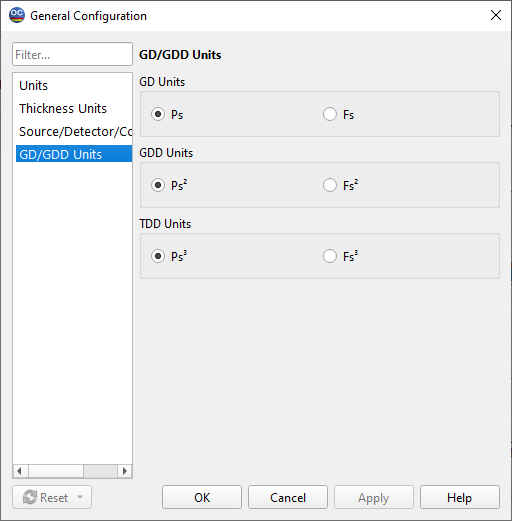
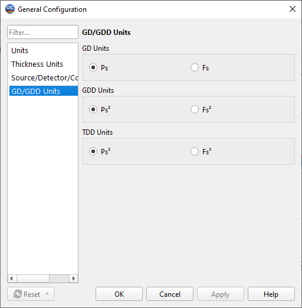

GD & GDD options
This Configuration Option allows the user to choose units for GD (Group Delay) and GDD (Group Delay Dispersion) measurement data.

This Configuration Option allows the user to choose units for GD (Group Delay) and GDD (Group Delay Dispersion) measurement data.
